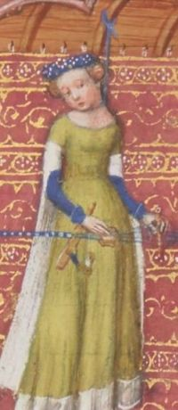

Inspiration from the source
The best place to go for inspiration is fashion or art archives. These will have paintings, diagrams, and possibly even patterns. But, if you’re like me and don’t have easy access to physical books, you can turn to the internet; however, this can become a bit tedious to find the right era or look you’re going for.
Searching for historical paintings
If you don’t have the desire, patience, or will to go digging through the archives of fashion, you can always just search for historical paintings in your target era and location. Take yourself through a virtual gallery on the web and note the style, shape, and fabric of the clothing. It’s also a good idea to pay attention to the apparent status of the people (noble, royal, peasant, etc.) so you can best match your dream. Here are some paintings I’m currently using as inspo for my own project:

I know anyone can put just about anything on Pinterest, but it’s a great place to see what other people have done, and another place to find historical paintings. Similar to searching on the internet, you can look up the specific era and place you believe fits your wishes. But this can get tricky. You want to make sure the inspo you find is as historically accurate as possible. You can do this with two checkpoints.
- When you search, add “historically accurate” somewhere in your wording. This isn’t going to give you 100% what you’re aiming for, but it certainly helps narrow it down.
- After you have some inspo, double check it with paintings you’ve found and see what matches the most. This will narrow down even further to what you want.